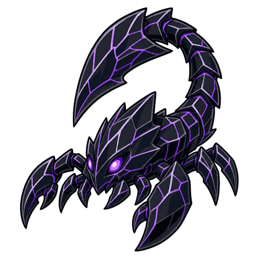
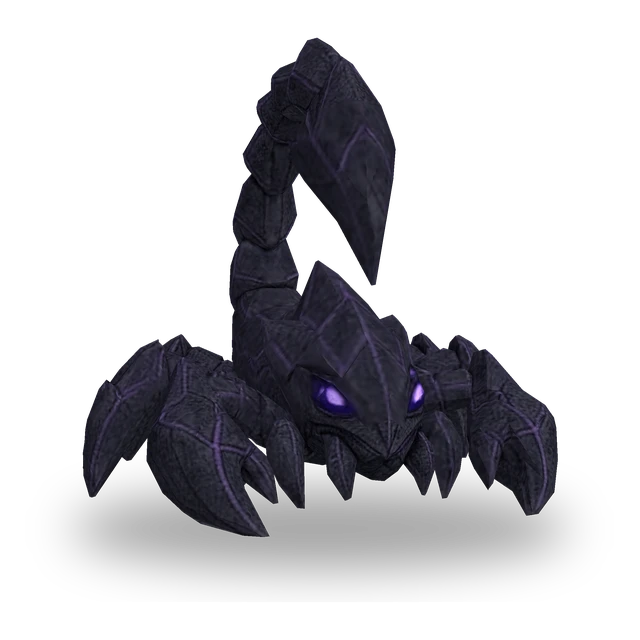

ใบมีดออบซิเดียน
สร้างความเสียหายกายภาพเท่ากับ 350% ของพลังโจมตีให้เป้าหมายปัจจุบัน โดยไม่คิดพลังป้องกัน

3D
| Lv. | พลังชีวิต | พลังโจมตี | พลังสกิล |
|---|---|---|---|
| 1 | 270 | 26 | 26 |
| 2 | 311 | 30 | 30 |
| 3 | 357 | 34 | 34 |
| 4 | 411 | 40 | 40 |
| 5 | 472 | 45 | 45 |
| 6 | 543 | 52 | 52 |
| 7 | 625 | 60 | 60 |
| 8 | 718 | 69 | 69 |
| 9 | 826 | 80 | 80 |
| 10 | 950 | 91 | 91 |
| 11 | 1092 | 105 | 105 |
พลังชีวิต พลังโจมตี และพลังสกิลจะเพิ่มขึ้น 15% ทุกเลเวล (สูงสุด Lv.11)
No.148
สร้างความเสียหายกายภาพโดยไม่คิดพลังป้องกันให้เป้าหมายปัจจุบัน และลดพลังป้องกันของเป้าหมายแบบซ้อนกันด้วยการโจมตี
สร้างความเสียหายกายภาพเท่ากับ 350% ของพลังโจมตีให้เป้าหมายปัจจุบัน โดยไม่คิดพลังป้องกัน
ทุกครั้งที่การโจมตีโดนเป้าหมาย จะลดพลังป้องกันของเป้าหมายลงครั้งละ 5 รวมสูงสุด 25 พลังป้องกันที่ลดลงจะคงอยู่เป็นเวลา 5 วินาทีหลังการโจมตีที่โดนครั้งสุดท้าย